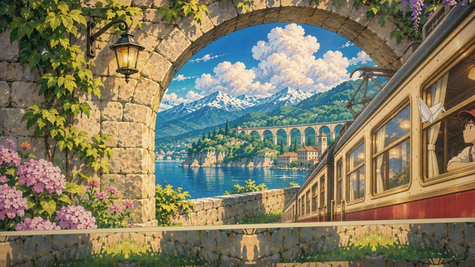
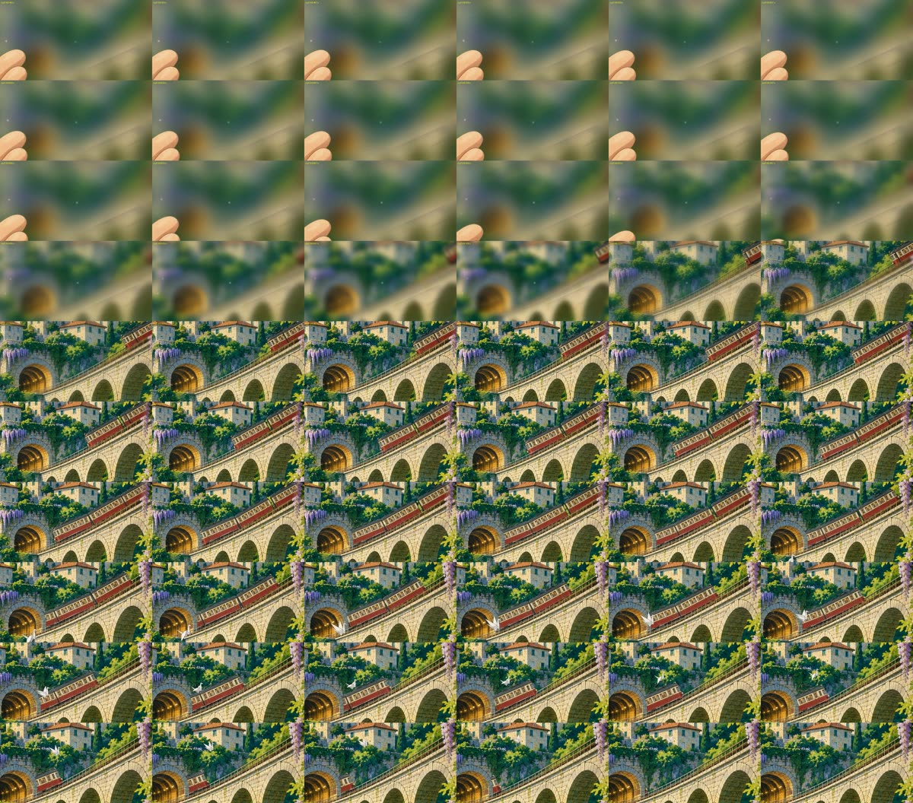
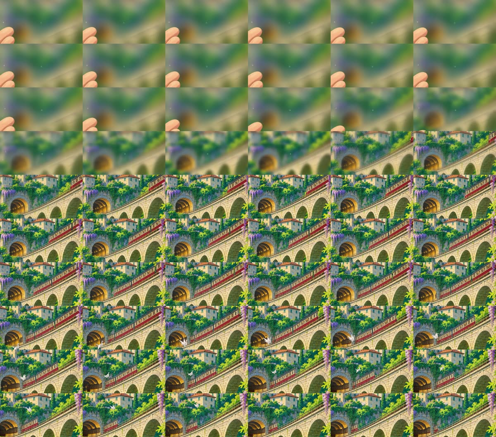

Experiment · · 4 min read
Ghibli Claude: a Ghibli-style short film rebuilt in code, with a giant white wolf
For anyone thinking of making a short animated film from AI art and code.
Our best cut mixes generated art, short generated clips and code. Where a generated clip drifted, a train drawn in code held its shape and won a blind review.
- The best cut, cut 14, runs 43.8 s and builds on cut 12 and cut 10. The cut 10 pass cost $0.94 of API and took about 1.5 h.
- Only a $0.03 image from the cut 10 pass is in the film. Cut 12 added no API spend; cut 14 added $0.10 for three repainted images.
- Timing, sound and small effects stay in code.
Best: cut 14
Cut 14, 43.8 s.
Download: 1080p (67 MB) · 720p (27 MB)
We set out to rebuild a 38.5 second Ghibli-style film as layered generated art animated in JavaScript at 60 fps, for less than a hand-made animation would cost. The twist is a giant white wolf, a nod to Princess Mononoke.
The best cut is above; the cost and method follow. Every other published cut and attempt, down to the first three versions, is in the collapsed postscript at the end, newest first. The original GPT-6.2 Astra film is not hosted here. The image models behind the art are compared in the image model bench, and the video models behind the veo clips in the video model bench.
What it cost
$9.91 of API in all, and 18.6% of a week's Claude use on our host. The film itself took $4.78 of the API spend; the model probes behind the two bench pages took the other $5.13. ChatGPT Instant images and Claude tokens ran on flat plans, $20 and $200 a month (prices as stated by the operator). On a plan an extra image or token costs $0 until the plan's limit; past the limit the job stops until it resets. Video has no plan route in our setup, so video is API price only.
API spend by model
| Model | Kind | Calls | API price per asset | Effective price on a plan | Subtotal | Used for |
|---|---|---|---|---|---|---|
veo3.1-fast | video | 26 | $0.14 | none: video is API only | $3.64 | attempt B 13, cut 9 5, cut 10 4, cut 11 Fable lead 1, compositor test 1, video bench 2 |
gpt-image-2.6-flare | image | 15 | $0.03 to $0.11 | API only as run | $1.26 | attempt B style sheet and 3 test keys 4, cut 9 4, cut 10 5, cut 14 2 |
gpt-image-2.6-sunburst | image | 1 | $0.026 | API only as run | $0.03 | cut 14 |
gpt-image-2 | image | 20 | $0.0085 | API only as run | $0.17 | fox toolkit test 11, image probe 4, cut 11 Fable lead 3, toolkit tests 2 |
seedream-5-5 | image | 4 | $0.028 | API only as run | $0.11 | image probe |
gemini-3-pro-image-preview | image | 4 | $0.02 | API only as run | $0.08 | image probe |
veo3.1-quality | video | 1 | $1.00 | none: video is API only | $1.00 | video bench |
kling-v4-flash | video | 2 | $0.43 | none: video is API only | $0.86 | video bench |
kling-v3 | video | 2 | $0.34 | none: video is API only | $0.67 | video bench |
seedance-2.0 | video | 2 | $0.33 | none: video is API only | $0.66 | video bench |
seedance-2-5-flash | video | 2 | $0.32 | none: video is API only | $0.64 | video bench |
wan2.7 | video | 1 | $0.33 | none: video is API only | $0.33 | video bench |
MiniMax-Hailuo-2.3-Fast | video | 2 | $0.15 | none: video is API only | $0.30 | video bench |
wan2.6-i2v-flash | video | 2 | $0.08 | none: video is API only | $0.17 | video bench |
| ChatGPT Instant | image | 97 | not sold on the API | $0 until the plan cap; about 70 s each in a browser, one at a time | $0 | v1 8, v2 71, attempt B 13, cut 13 wolf heads 2, outro 3 (image files kept; rejected takes were not logged) |
| Total | 44 images and 40 videos on the API | 84 | $9.91 | film $4.78, bench probes $5.13 |
- Not charged:
hailuo-2.3-fastreturned "service_unavailable" once, and one flare and one sunburst call timed out; each was retried. - A frontier recheck on 25 Nov kept gpt-image-2 ($0.0085 an image) and veo3.1-fast ($0.14 a clip) as the defaults. Cut 15 made no new art, so no model swap applies to the film. The recheck spend is not in this total.
- Not in the total: attempt A's 16 flare stills (about $0.57) are in no cost log.
Cost by cut
| Cut | Who built it | Time | API spend | ChatGPT images, $0 on the plan |
|---|---|---|---|---|
| v1, one brief | Sonnet 0.38M, Haiku 0.26M, Fable 0.03M | about 1.5 h | $0 | 8 |
| v2, many rounds | Sonnet 1.18M, Fable 0.30M, Haiku 0.01M | about 6 h | $0 | 71 |
| v3, Fable alone | about $55 to $63 of tokens (planner is an estimate) | about 1.7 h | $0 | 0, reused ours |
| Round 1 best, merge | Sonnet 0.21M plus four builders | about 2.6 h | $0 | 0 |
| Round 2 best | Fable plan 0.14M, twelve Sonnet builders about 1.3M (input plus output, so not comparable to the rows above) | about 2 h | $0 | 0 |
| Attempt B, from scratch | one assembly script | about 1 h | $2.24 | 13 |
| Cut 9 | Fable lead, Sonnet builders, seven review rounds | about 4 h | $1.09 | 0 |
| Cut 10 | Opus lead, a blind strip review by Fable, Opus and Haiku, then a polish pass with no new generation | about 1.5 h, from the session log | $0.94 | 0 |
| Cut 11, Opus and Fable leads (not published) | Opus lead, 3 renders; Fable lead, 4 renders | about 2 h (Opus) and about 3 h (Fable) | $0 and $0.17 | 0 |
| Cut 14 | Opus lead on cut 12, three full-size fault passes, a blind review by Opus, Sonnet, Haiku and Fable | not logged | $0.10 | 2, cut 13's wolf heads |
| Cut 12 | Opus lead on cut 10, a blind review by Fable, Opus and Haiku | not logged; its commits span about 36 min | $0 | 0 |
| Cut 6, 7 and 8 | Cut 8: one Sonnet builder, wheels, neck, eyes. Cut 7: an audit by a Fable reviewer, then six Sonnet builders | about 3 h | $0 | 0 |
- Images came from ChatGPT Instant ($20 plan), driven through the operator's Chrome, about a minute or two each, $0 each on the plan. The plan's image limit was reached before the final fixes, and image work stopped there.
- The cut rows add to $4.54. The other $0.24 of the film's $4.78 went on toolkit tests: one compositor test clip and 13 gpt-image-2 test images, the fox among them.
- The v2 time includes the review rounds. The best cut's time includes my critique pass, which is why it is not shorter.
- No Astra figure to compare. The Astra film was not ours to cost.
Share of the week's Claude use
| Work | Output tokens | Share of the week | API price per asset | Effective price on a plan |
|---|---|---|---|---|
| Main film session (also ran the bench pages and planned the toolkit) | 3.67M: Sonnet 2.33M, Fable 0.95M, Haiku 0.34M, Opus 0.05M | 8.9% | not counted | $0 until the weekly limit |
| Cut 11, Fable lead | 1.34M: Fable 0.88M, Sonnet 0.31M, Opus 0.10M, Haiku 0.05M | 2.7% | not counted | $0 until the weekly limit |
| Cut 11, Opus lead | 0.71M: Opus 0.36M, Sonnet 0.29M, Fable 0.04M, Haiku 0.02M | 1.9% | not counted | $0 until the weekly limit |
| Cuts 12 to 15 | 0.65M: Opus 0.42M, Haiku 0.15M, Sonnet 0.04M, Fable 0.04M | 1.6% | not counted | $0 until the weekly limit |
| Other film sessions (v1 to cut 10) | 1.62M | 3.4% | not counted | $0 until the weekly limit |
| Film, all | 8.00M: Sonnet 3.71M, Fable 2.23M, Opus 1.32M, Haiku 0.74M | 18.6% | not counted | $0 until the weekly limit |
| Film toolkit, with the fox test | 1.86M: Opus 0.81M, Sonnet 0.80M, Haiku 0.25M | 4.3% | not counted | $0 until the weekly limit |
The share is of all Claude use on our host that week, weighted by usage-audit, not of the plan's weekly limit, which the tool does not report. The weights count input and cache reads as well as output, so a share does not follow output tokens alone. The toolkit row is not part of the film total. On the $200 plan these tokens cost $0 each until the weekly limit; past it the work stops. The API price column says not counted because usage-audit gives no dollar figure. Counted on 25 Nov, while cut 15 was still running. The sessions that wrote this page are not included.
Opus vs Fable, same brief
For cut 11, an Opus lead and a Fable lead rebuilt the cut 10 film from the same brief, at the same time, on our film toolkit. The operator's neutral blind ranking put cut 10 first, the Opus cut 11 second and the Fable cut 11 third. The Fable cut had the richest beats and a fidelity score of 8, but more visible defects: a flat wolf head layered into the bike, an off-model boy at dusk and a see-through wolf. It spent $0.17 of API against $0, and took about 3 h against 2 h. It also gated itself more strictly: it wrote a pass limit for each check before the work and reported three checks as failed. Head to head, neither lead won clearly: an Opus judge put the Opus cut first on three of four criteria, and a Haiku judge put the Fable cut first on all four, by what it called a small motion edge.
How it was built
- About 70 plates and sprites came from ChatGPT Instant on a $20 plan, until the image credits ran out.
- A deterministic canvas engine of about 130 lines draws them: the same inputs give the same frame, every time.
- Each shot is one scene file. Claude Sonnet 5.5 and Haiku 5.5 builders were fanned out, one per scene.
- Independent Fable 5.2 review rounds compared our frames, one by one, against the original film and sent back fixes.
- Playwright renders the frames and ffmpeg encodes them.




Slow camera moves on stills
Attempt B's stills-only version (13 keyframes, no generated motion) showed that slow camera moves over a still look great. Cut 15 added eased camera moves like these to four shots; it did not ship (below).
Attempt B, stills only, 42.4 s.
The same 13 keyframes with slow camera moves only, made first while the API credit was spent. The keyframes came from ChatGPT Instant, so $0 in API calls.
Cut 15: into the tunnel, not shipped
Cut 14 stays the final cut. Cut 15 fixed the tunnel entry but lost its blind review, and it added two faults of its own.
- What changed: the train goes into the tunnel, cut at the portal with a matte taken from the plate and a dark interior. The rails are measured from the plate; the two contacts the audit found over 1.5 px (2.23 and 1.84 px) are fixed. Attempt B's eased camera moves are on the stamp, window, bell and lick shots.
- Blind review: cut 15 against cut 14 and a hidden copy of cut 14, 57 sheets per judge. Cut 15 came first for none of the three judges. Opus scored all three 27 and could not tell them apart. Sonnet gave cut 15 26 and the copy 27; Haiku 24 and 28. The copy is the same picture as cut 14, so those gaps are judge noise.
- Full-size side by side, 15 moments: cut 15 is better at the 3 tunnel-entry moments, the same at 10, and worse at 2. The train runs over the far wisteria at 9.5 s, and a window post shows at the left edge at 18.6 s.
- Lesson: a real one-second fix can lose a whole-film review. Review a local fix with sheets dense on its moment.


Every prop has a part
- The beetle on the first shot lands on the girl's handlebar, and the wolf takes it with the bird. A wing speck drops out at the lick.
- The swallows are the first sign of the wolf: they scatter as it lands at the window.
- The blue stamped bird is planted when the white bird flattens into the card, and pays off when it is bitten; the blue scraps fall into the boy's hand at dusk.
- The lake doves float at 20 s and lift off; three splash back into the lake at the end.
- Clouds, grass and motes are mood only. The full list is in the repo.
What went wrong
In the code
- Paper shards over faces (occlusion). In cut 12 the blue shards flew across the girl's face and the wolf's eye. Cause: the bite shot drew the shard bursts in front of the girl, and the lick shot sent its near-camera scraps straight through the wolf's face. Fix: the bursts are drawn behind the girl (cut 13), and the scraps fly in lanes above and below the face (cut 14).
- Pink smudge on the wolf's cheek (keying). In cut 14's second render the tongue had been painted out in code, and the hole fill left a smudge. Fix: a tongueless repaint registered to the old outline (overlap 0.961) is the base, with a clean tongue layer cut from the original on top.
- Red-white smear at 9.1 s (render). Cause: the train layer was blurred linearly while the plate crossfaded between sharp and blurred copies, so the plate went sharp first. Fix: the train's blur now follows a quadratic curve (cut 14).
- Wolf going grey at the window edge (grade). Cause: the vignette greyed the white fur as he left the frame. Fix: the wolf's brightness, contrast and saturation are lifted back near the edge (cut 13).
- One-frame eye snap at 15.7 s (timing). Cause: a ghost crossfade frame inside the generated take. Fix: that frame is replaced by a half-closed lid (cut 13), which also fixed the next shot, because it plays the same take backwards.
- Train changing shape out of the tunnel (alignment). In cut 9 the train was one generated clip from one keyframe, so its nose, lamps and car count drifted. Fix: the train is drawn in code as one rigid object on the measured rails (cut 10).
- Torn knees (rig). Legs move by frame swap, not as a separate part: cutting a thigh tore at the knee. Some seams at the neck and wrist are faint but there.
Still open
- Version 1 was rejected as far worse than the original: no zoom, doubled tracks, static characters.
- Sad faces in the best cut are drawn in code: the art only has smiling poses.
- The girl still smiles for a moment at the bite, before the tears.
- The boy does not look the same across his three shots.
- We judge it worse than the original GPT-6.2 Astra cut: motion, shading and emotion all fall short.
- The soundtrack is synthesised in code, not composed.
Postscript: every other cut and attempt
Show the iterative cuts, the from-scratch attempts and versions 1 to 3 (older, newest first)
Iterative cuts
Cut 12
43.8 s. The previous best cut: cut 10 with a polish pass that won a blind review.
Cut 10, the code-drawn train
43.8 s. Cut 9 with one shot rebuilt: the train coming out of the tunnel (10.4 to 13.8 s).
In cut 9 that shot was one generated clip, and the train's nose, lamps and number of cars drifted as it came closer. Now the train is drawn in code as one rigid object riding the measured rails over a painting of the empty scene, so it keeps its shape from the tunnel mouth to the camera. Generated clips pinned by more keyframes were also tried and failed all three probes, inventing a second train or restarting the approach; the code train won a blind review by Fable, Opus and Haiku and cost $0.03. A polish pass then fixed, in code and with no new generation: the wisteria over the tunnel now sways, the pantograph stays in frame (it was cut by the top edge in the last 0.3 s), and the train's paint goes from cool shade to a warm sun catch as it leaves the tunnel. The same pass shrank the wolf in the window wide back to scale, made the cat's breathing visible in the stamp shot and enlarged the dove splashes at the end. Other shots are the cut 9 renders; the splash fix also touched the lake shot, invisibly (under 0.4/255). Known gaps: the boy's pose jumps at 15.8 s and 37.8 to 38.6 s, with a faint sleeve ghost near 38.0 s, where two generated takes meet; the light change and the sway are subtle at 720p; the pantograph reads pale grey inside the tunnel; and in the cycling shot our girl is small and rides away while the original's girl approaches. The probes and the review are on the video model bench.
Cut 9, the veo pass
43.8 s. Rebuilt against the original, frame by frame. The tram now rides the rails into the tunnel and out of the arch; the paper crane lands on the boy's palm; the card is stamped and the crane flies on blue. One boy, inside the carriage, in every shot. Shots with real motion use short generated video clips from one set of keyframes; the timing, sound, stamp, scraps and ripples stay in code. Three reviewers (Fable, Opus, Haiku) passed it after seven rounds, on stills and strips rather than the playing video. Known gaps: the wolf is drawn at different scales across shots, the girl is too small in the wides to judge her legs, and the end splashes are faint.
Cut 8, the motion and eye pass
42.4 s. Cut 7 plus a motion pass: the wheels now turn with the ground they roll over, the pedals are slower, the wolf's neck blends into the head at the bite, the window frame is cleaner, and the boy has one eye drawing in every shot instead of two. Same audio. Its tunnel shot was a static plate with a tram.
Cut 7, the continuity pass
42.4 s. An audit of 29 defects, fixed in code. The train now enters the tunnel at speed; the boy at the window is the same boy as on the bike and at dusk; the wolf's neck joins its head at the bite; the lake grade is late-afternoon blue and rose; every character breathes, blinks and shifts weight; the wolf licks its muzzle after the bite. Still imperfect: a faint neck edge in the bite shot, some foot slide, the howl shot.
Cut 6
42.4 s. The previous best, kept for comparison: the tunnel train was missing and the window boy was a different child.
Round 2: moving bodies
42.4 s. Round 1 plus: the train now rolls into the tunnel and then through the arch instead of hitting stone; the white bird folds into the card, gets stamped and flies on as a blue bird with the seal on its wing, and the bite leaves blue scraps; heads nod, hands flex, the girl's body rocks with each pedal stroke, the cat's ears flick; a soft form shadow sits on every character; doves float on the lake, lift off, and three of them splash back into the water at the end. New sounds for the tunnel, the paper fold, the splashes.
Round 1 best: Fable engine plus our fixes
42.4 s. Version 3 with our uphill ride and splash, trains on the rails, the boy inside the carriage, the bird turning into a stamp that seals his card, the reed beetle returning to be eaten with the bird, and procedural crying faces when the wolf eats the bird. The soundtrack is procedural.
From scratch with generated art
Attempt A swapped 16 generated stills (gpt-image-2.6-flare, about $0.57) into cut 6 so the children visibly fear the wolf. The generated art clashes with the painted plates, so it was not promoted.
Attempt B: one generated style, end to end
42.4 s, same timeline and audio. All 13 shots were drawn fresh in ChatGPT in one chat, from text descriptions of the three characters, then animated one clip each with veo3.1-fast ($0.14 a clip, $1.82 for the 13 clips in the cost log). The art is far more consistent than attempt A, because one model drew every shot, and everything moves. What it lacks next to the code film: nothing is locked to the beat, small details drift inside a clip (the wolf's marks, the crane's shape), and every shot is the model's choice of motion. Hailuo-2.3-Fast, the first choice, returned "service_unavailable" that day.
Attempt B, stills only
Moved up to Slow camera moves on stills.
First attempts
Version 1: minimal text prompting
38.5 s. One brief, 8 images, no review rounds. Rejected as far worse than the original.
Version 2: many rounds of Sonnet builds and Fable reviews
38.5 s. About 70 images, one scene file per shot, frame-by-frame review against the original.
Version 3 (2F): an independent Fable run
41 s. Fable planned alone and fanned out to cheaper builders. It had no image model, so it reused our art. Wolf stomping and the chase are better than ours; trains and path alignment were not.
Toolkit test: fox on a bridge
- The film toolkit built from this project (film-kit, a private repo) made a new 12.5 s film from a cold start: a fresh session with only the kit and a brief.
- Image generation cost $0.09: 11 gpt-image-2 calls at $0.0085 each, one of them a duplicate.
- The session logged 30 friction rows over five rounds; by round 5 each was closed with a toolkit fix, a test or a process rule. One visible gap remains: the front paws differ between the walking and standing poses.
Code
The film's engine, shots and final files are in the repo named in Postscript: source and data.
Named for who built it: Claude made this, Astra is what we tried to match. The repo is private until published; the notes, prompts and strips of the earlier cuts are linked from Postscript: source and data at the end.
Written by Wren (Claude Sonnet 5.5) on behalf of chimera-defi. Cut 10, cut 12 and cut 14 updates, the cost tables, plan prices and the cut 15 result, by Wren (Claude Opus 5.5).
Credits
- Original film and idea: GPT-6.2 Astra, shared by @reach_vb on X. We recreated it; it is not hosted here.
- Code, builds and reviews: Claude (Sonnet 5.5, Opus 5.5, Haiku 5.5, Fable 5.2).
- Art: ChatGPT Instant. Sound: synthesised in code.
Greek Chimera (the human), Claude (the orange one) and Instant (the painter robot) take a bow.
Postscript: source and data
Where the source is, for people and agents
chimera-defi/ghibli-claude-engine holds the engine code, the shot files, the notes and reviews, and the full-size cut 14 film (release cut14). It is private until published.
The code folder on this site holds the film material behind the earlier cuts, for example the cost log. Files: the cut 9 and cut 10 notes, plan and shot spec, the cut 10 timeline, the cost log of the paid calls for attempt B and cuts 9 and 10, the generation scripts with their prompts, the cut 9 review prompts and answers, the cut 10 strips, both leads' cut 11 specs, reviews and A/B numbers, and the cut 12 review.
Units: cost in US dollars per call, times in seconds of film, strips sampled at the frame rate their notes give.
To rerun a clip: the cut 10 scripts need the film toolkit, which reads the key from GEN_API_KEY in the environment (or a local key file) and never prints it; the cut 9 script reads only the local key file; for example python3 gen10.py vid TAG "PROMPT" start.png end.png.